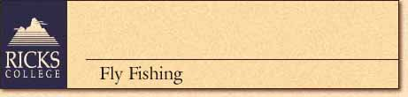
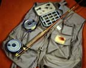

 |
|
| August 2-8,1998 - $350 | Top • Back |
| FLY FISHING ON
BLUE-RIBBON TROUT STREAMS
People have known for years that nothing is quite as sublime as spending time luring a wily, old fish from the depths of a stream with rod, line, and fly. Instruction for women and men, beginner to advanced. Bring your own rod and equipment. Some rentals are available. RIVER ECOLOGY: NATURE'S DELICATE BALANCE
LITERARY WORKS OF THE GREAT OUTDOORS
|
|